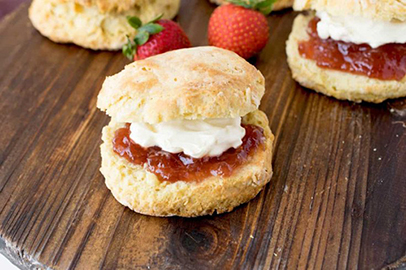

Kim's Simple Baking
Scone
Tip : When you knead the mixture together by hand, please be careful not to work hard. This is not American style scone but English style Scone.
Ingredients

- Unsalted butter 60g
- Sugar(optional) 30g
- Egg 50g (1 egg)
- Flour 300g
- Baking powder 3g
- Milk 100g
- Salt 1g
- Vanilla Extract 1tsp
Directions
- Preheat the oven at 180C (356F).
- Mix flour, salt, baking powder, and chopped butter together using your fingers (more than 5 minutes).
- You can put a handful of dried berries in the dough if you want. (Optional)
- Put eggs, sugar and vanilla extract all together in milk, mix them with a fork and pour them into the dough.
(Leave 2 to 3 spoons to apply on the scone dough later.)
- Mix all ingredients evenly with a spatula.
- Put the mixtures on the floor and knead it together by hand.
- Roll it out to about an inch thick with a rolling pin.
- Cut to desired size or cut with shape cutter.
- Apply the leftover milk egg mixture to the top of the scone.
- Bake in preheated oven at 180C (356F) for 30 minutes.
Home |
Pound Cake |
Scone |
Cheese Cake |
Souffle Pancake
For more information check out YouTube Video